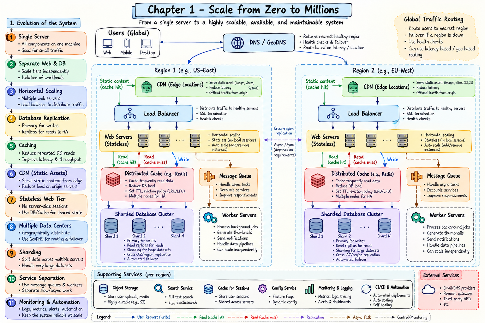

Topic · System Design Fundamentals
Scale From Zero to Millions of Users
How a system grows from a single server into a resilient, multi-region architecture - one bottleneck, and one deliberate trade-off, at a time.
Final architecture
The end state, reached by fixing one bottleneck at a time - not a day-one design.


Paths: static → CDN edge · read-hit → cache · read-miss → replica/shard then fill cache · write → primary then replicate + invalidate cache · async → queue → worker · region failure → GeoDNS reroutes to a healthy region.
Quick Revision
Core idea: start simple, find the next bottleneck, add the one component that fixes it, and name the trade-off it introduces.
- Single server → split web and data tiers so each scales alone.
- Load balancer + stateless web servers → horizontal scale and failover; sessions move to a shared store.
- Read replicas → read scale and failover, but lag and a primary write bottleneck remain.
- Cache + CDN → fast hot reads and static assets; plan TTL, invalidation, and fallback.
- Multi-DC + GeoDNS → regional failover and lower latency, at the cost of data sync.
- Queue + workers → move slow work off the request path.
- Sharding → split data when one DB can't hold or serve it; pick a key that spreads data and traffic.
Remember: replication copies data (read scale + redundancy); sharding splits data (dataset + traffic scale). A replica is not a backup.
Key ideas
The essentials behind each step.
- Vertical vs horizontal — scale up is simple but capped and still one failure point; scale out adds redundancy but needs traffic distribution and coordination.
- Stateless web tier — keep no session in local memory, so any healthy server serves any request and autoscaling and rolling deploys work.
- Replication — writes to primary, reads from replicas; watch lag (stale reads) and remember the primary is still the write bottleneck.
- Cache — hit returns fast; miss hits the DB then fills the cache. The key must include every input; plan TTL, eviction (LRU/LFU), invalidation, and an outage fallback.
- CDN — serve static assets from the edge; use versioned filenames and an origin fallback.
- Queue + workers — enqueue slow work, ack the user, process async; handle retries, duplicates, and backlog.
- Sharding —
shard = hash(key) % N; a good key avoids hotspots and scatter-gather. Challenges: resharding, cross-shard joins and transactions. - SQL vs NoSQL — relational for transactions, joins, and a stable schema; NoSQL for simple, huge-scale, flexible access. Often both (polyglot).
Active recall
Answer before revealing.
Why start with a single server?
Cheap, simple, and fast to build; distributed complexity isn't justified until requirements demand it.
Why does a bigger server add capacity but not availability?
It is still one machine with no redundancy, so still a single point of failure.
Replication vs sharding?
Replication copies the same data for read scale and redundancy; sharding splits different data for dataset and traffic scale.
What causes a stale read after a write?
Reading a lagging replica, or a stale cache entry that was not invalidated.
Cache miss, and if the cache fails?
Miss queries the DB then fills the cache. If the cache fails, the DB takes the full read load - plan fallback and protection.
What makes a shard key dangerous?
It concentrates traffic (celebrity/hotspot) or forces cross-shard queries.
Trade-offs
Every component improves one thing and costs another.
| Choice | Benefit | Cost / risk |
|---|---|---|
| Separate tiers | Independent scaling | More moving parts |
| Horizontal scaling | Capacity + redundancy | Coordination and ops |
| Load balancer | Healthy traffic distribution | Another critical tier |
| Read replicas | Read throughput + failover | Lag; primary write bottleneck |
| Cache | Low latency, fewer DB reads | Invalidation, staleness, outage |
| CDN | Fast assets, origin offload | Cost, expiry, invalidation |
| Stateless tier | Free routing + autoscaling | Needs shared state store |
| Multi-DC | Regional resilience, latency | Data sync + deploy complexity |
| Queue + workers | Decoupling, async scale | Backlog, retries, duplicates |
| Sharding | Dataset + traffic scale | Resharding, hotspots, joins |
Failure modes
Each capability adds new ways to fail.
- Load balancer failure — the entry point is critical; use a redundant, health-checked deployment.
- Primary DB failure — promote a replica; promotion can lose recent writes if it lagged.
- Replica lag — stale reads after a write; use read-after-write routing where it matters.
- Cache outage — full read load hits the DB; use multiple nodes and controlled fallback.
- Hot key — one key overloads a node; replicate or split it and prevent stampedes.
- CDN stale asset — old file served; use TTL, versioned names, or invalidation.
- Queue backlog — producers outpace workers; scale consumers and alert on queue age and depth.
- Shard hotspot / resharding — uneven traffic or risky data moves; revisit partitioning and plan migration.
Interview practice
Answer aloud, then reveal.
100 users - smallest architecture?
A single server (web + app + DB). Distributed complexity isn't justified yet.
Web CPU saturated, DB healthy - what first?
Add stateless web servers behind a load balancer; leave the DB alone.
Where do sessions live behind a load balancer?
A shared store (session cache/DB), never only local memory.
95% reads - how do replicas help and not help?
They scale reads and enable failover; they don't scale writes or guarantee freshness.
Cache cluster fails, DB collapses - why?
The DB took the full read load (thundering herd). Use multiple cache nodes, coalescing, rate limiting, and headroom.
Why process images behind a queue?
Keep the request fast; ack the user and let workers do heavy work async.
Replication vs sharding in one line each?
Replication copies the same data; sharding splits different data.
Strip the final diagram for a small startup.
Keep single server or web+DB; drop CDN, multi-region, queues, and sharding until a real bottleneck demands them.